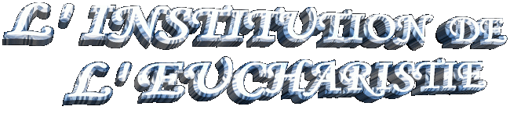
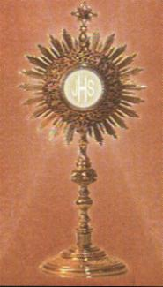
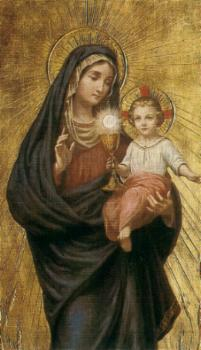
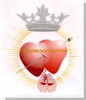

Matthieu a enregistré le moment inoubliable de l'Institution de l'Eucharistie, en écrivant les mots que JÉSUS a parlé:
- Pendant qu'ils mangeaient, Jésus prit du pain; et, après avoir rendu grâces, il le rompit, et le donna aux disciples, en disant: "Prenez, mangez, ceci est mon corps". Il prit ensuite une coupe; et, après avoir rendu grâces, il la leur donna, en disant: "Buvez-en tous; car ceci est mon sang, le sang de l'alliance, qui est répandu pour plusieurs, pour la rémission des péchés". (Matthieu 26,26-28)
Marc a enregistré ainsi:
- Pendant qu'ils mangeaient, Jésus prit du pain; et, après avoir rendu grâces, il le rompit, et le leur donna, en disant: "Prenez, ceci est mon corps." Il prit ensuite une coupe; et, après avoir rendu grâces, il la leur donna, et ils en burent tous. Et il leur dit: "Ceci est mon sang, le sang de l'alliance, qui est répandu pour plusieurs". (Marc 14,22-24)
Luc a écrit les suivants mots de JÉSUS:
- Ensuite il prit du pain; et, après avoir rendu grâces, il le rompit, et le leur donna, en disant: "Ceci est mon corps, qui est donné pour vous; faites ceci en mémoire de moi." Il prit de même la coupe, après le souper, et la leur donna, en disant: "Cette coupe est la nouvelle alliance en mon sang, qui est répandu pour vous". (Luc 22,19-20)
Paul décrit:
- "Car j'ai reçu du Seigneur ce que je vous ai enseigné; c'est que le Seigneur Jésus, dans la nuit où il fut livré, prit du pain, et, après avoir rendu grâces, le rompit, et dit:" "Ceci est mon corps, qui est rompu pour vous; faites ceci en mémoire de moi"."De même, après avoir soupé, il prit la coupe, et dit:" "Cette coupe est la nouvelle alliance en mon sang; faites ceci en mémoire de moi toutes les fois que vous en boirez". (1Corinthiens 11,23-25)
L'Apôtre Jean qui était à côté du MAÎTRE a décrit les mots que JÉSUS a prononcés dans le Dernier Dîner:
- Jésus leur dit: "En vérité, en vérité, je vous le dis, si vous ne
mangez la chair du Fils de l'homme, et si vous ne 
Les paroles de JESUS sont claires et authentiques. Sur ce moment d'au revoir IL a créé le Phénomène Mystérieux de la "Transsubstantiation" que maintenant se passe pendant toutes les Saints Messes. Dans l'instant de la Consécration, le SAINT ESPRIT transforme les espèces du pain et du vin dans le Corps, Sang, Âme et Divinité de LE SEIGNEUR JÉSUS CHRIST et maintient l'apparence originale des mêmes espèces.
Cela veut dire qui JÉSUS est vraiment présent dans l'Hôte Consacrée, en Humanité et Divinité. Alors, la Sacrée Communion ne peut país être considérée comme un "symbole" or comme une "représentation" du SEIGNEUR, parce que c'est LUI-MÊME qui c'est là. NOTRE SEIGNEUR est Vraiment Présent dans la plus petite fraction d'une Particule Consacrée, dans toutes les Tabernacles du monde, toujours disponible pour rassasier le faim spirituelle, par éclairer les décisions des âmes dans chaque jour, accueillir les supplications et prières des ceux qui cherchent le SON assistance, SON aide et inspiration au le long de l'existence, pour protéger et défendre les personnes contre les trames de Satan et pour les consoler dans les revers de la vie. Plein d'amour et miséricorde IL se présente modestement dans une particule du blé et eau et dans le vin consacré. Dans cette simplicité IL cache tout le SON pouvoir et la SA divinité, parce que primordialement IL veut que chacun de nous, ne país le chercher avec ostentation et ni avec mots inutiles et bavardages, mais avec humilité, en reconnaissant les propres faiblesses et limitations, conscients de notre insignifiance et de notre rien. Ainsi chaque personne pourra atteindre de LUI, SES précieuses grâces qui émanent de SON Amour Divin.
Cette réalité est un signal, qui révèle le besoin des personnes d'essayer augmenter bien plus , l'intensité de l'attention et de l'affection que doivent consacrer à NOTRE SEIGNEUR. Non comme une attitude déjà pensée, ou programmée et égoïste, mais comme un procédé normal, engendré de l'intérieur pour l'extérieur, de notre cœur pour le Cœur du CRÉATEUR, avec une procédure consciente qui devrait être cultivé habituellement. Ce préoccupation représentera une continuel et permanent prière à DIEU, qui serait modulé et orné avec les prières royales que nous allons réciter chaque jour, afin qu'ils viennent révéler notre amitié et soient notre réponse d'amour, dans un affectueux tribut de gratitude, pour toutes les choses qu'IL nous proportionne, inclusivement pour le talent de nos propre vie.

LE CORPUS CHRISTI
Dès le temps apostolique
l'Église a institué la Fête du Corps de Le CHRIST, un hommage de gratitude à
JÉSUS pour la Vraie et Royal Présence dans notre demi. La Fête était
célébrée dans le jeudi de la Semaine Saint, par le fait du Sacrement de la
Sacrée Eucharistie avoir été instituée pour JÉSUS dans le jeudi, pendant le
Dernière Diner dans le Cénacle, en Jérusalem, jour antérieur de SON mort dans la
Croix.
pour la Vraie et Royal Présence dans notre demi. La Fête était
célébrée dans le jeudi de la Semaine Saint, par le fait du Sacrement de la
Sacrée Eucharistie avoir été instituée pour JÉSUS dans le jeudi, pendant le
Dernière Diner dans le Cénacle, en Jérusalem, jour antérieur de SON mort dans la
Croix.
Cependant, comme dans le Semaine Saint nous célébrons la Mort et Glorieuse Résurrection du SEIGNEUR avec la mémoire de toutes les abominables souffrances de JESUS, l'esprit de tristesse domine la plupart de la liturgie.
Pour cette raison, dans la continuité des années, l'Église a décidé de choisir une autre date pour meilleur et avec très effusion faire l'hommage à NOTRE SEIGNEUR et LUI remercier par les bénéfices de SON Admirable Travail Rédempteur, que dans le quotidien répand grâces dans notre vie. Ainsi, dans l'année de 1246, pour ordre de Sa Sainteté le Pape Urbain IV, la célébration de la Fête du Corps de LE CHRIST a été insérée dans le calendrier liturgique pour être accompli dans toutes jeudi, après le dimanche dans que nous a célébrons la Fête de la TRINIDAD TRÈS SAINT.
Le mot «Corpus Christi» est Latin et il veut dire "Corps de CHRIST" qui est la même Sacrée Communion, ou Sacrée Eucharistie, ou Sacrée Espèce, ou Sacrement Très Saint et aussi, Corps de DIEU.
Chaque année, dans beaucoup des villes du monde aussi bien qu'au Brésil, les Chrétien se joignent et pour initiative personnelle ils décorent les rues avec beau et gracieux dessins par où il passera la Procession avec l'autorité ecclésiastique en conduisant l'Ostensoir avec le SACREMENT TRÈS SAINT. Ils sont construits dessins très jolis, vrais tapis de fleurs et des autres matières à l'usagé artistique, dans une manifestation sincère et spontanée d'affection et amour au CORPS DE DIEU. Dans le Belgique, en 1246, quand la Fête est entrée pour le Calendrier Liturgique, les Chrétien ont réalisé le premier hommage dans les rues de la ville de Liège. Les rues étaient avec une décoration merveilleuse et de une façon très attirant. La décoration il a été fait avec immenses des tapis colorés, à travers de où il est passé la Procession avec JÉSUS. Une rare beauté!

LA SAINT MESSE
 La Saint Masse ou la
Célébration Eucharistique est où nous avons reçu la Sacrée Communion et où nos
prières atteignent plénitude, grandeur et plus intensité sur la direction de
DIEU. La Saint Messe c'est le sacrifice de la Nouvelle Alliance entre DIEU et
l'humanité de toutes les générations, consommé dans le Calvaire avec le Sang
Rédempteur de JÉSUS.
La Saint Masse ou la
Célébration Eucharistique est où nous avons reçu la Sacrée Communion et où nos
prières atteignent plénitude, grandeur et plus intensité sur la direction de
DIEU. La Saint Messe c'est le sacrifice de la Nouvelle Alliance entre DIEU et
l'humanité de toutes les générations, consommé dans le Calvaire avec le Sang
Rédempteur de JÉSUS.
Le sacrifice est célébré dans toutes les Saints Messes de manière non sanglant, mais d'une façon vraie et authentique. JÉSUS la victime parfaite, est vraiment présent dans Corps, Sang, Âme et Divinité, dans l'Hostie e dans le Vin consacré, caché dans les apparences du pain et du vin, et IL s'offre Soi-même au SAINT PÈRE ÉTERNEL à travers des mains du prêtre, SON ministre célébrant, dans le même chemin, comme IL a fait dans le Dernier Dîner avec les Apôtres, sur Jérusalem, quand IL a célébré la première Messe et a institué le Sacrement de l'Eucharistie. La Saint Messe est essentiellement le même sacrifice de la Croix, seulement que sur le Golgotha il a eu souffrance et épanchement de sang, et dans l'Autel c'est non sanglant, sans les vraies douleurs du CHRIST.
Par les vers des Actes des Apôtres, nous pouvons voir qu'après la résurrection du SEIGNEUR, les Disciples avec intérêt et attachement ont donné continuité aux Travails du CHRIST. Ils célèbrent le Saint Messe et les fidèles ont participé quotidien avec ferveur et amour:
- "Ils persévéraient dans l'enseignement des apôtres, dans la communion fraternelle, dans la fraction du pain, et dans les prières". (Actes 2,42)
- "Ils étaient chaque jour tous ensemble assidus au temple, ils rompaient le pain dans les maisons, et prenaient leur nourriture avec joie et simplicité de cœur". (Actes 2,46)
Le mot Messe a commencé à être utilisé dans le siècle VI. Précédemment la Saint Messe était sue par les autres noms: Sinaxe, Misterium, Fractio Panis (Fraction du Pain), Collecta, Oblatio (Oblation), Liturgie, etc. Beaucoup de ces noms qui dénommaient la Célébration de la Eucharistique, aujourd'hui ils sont titres de parties de la Saint Messe.
Il y a trois aspects fondamentaux qui se passent dans la célébration d'une Saint Messe:
- Le Présence Royal et Vraie du SEIGNEUR.
- Le sacrifice de NOTRE SEIGNEUR et de l'Église (de tous ses membres).
- Le notre Communion avec LE CHRIST et avec nos frères.
Pour cette raison
l'Église apprend que l'Eucharistie, la Saint Messe ou le Saint Sacrifice, c'est
le même précieux 
Par une meilleure perception, nous disons que la Saint Messe est formée pour quatre parties: Rituel Initial, Liturgie de la Parole, Liturgie Eucharistique et Les Dernières Rites. Comme les noms indiquent: les lectures des fidèles et l'homélie du célébrant constituent l'espace de la Liturgie de la Parole; la Liturgie Eucharistique commence dans le Offertoire, suit avec la prière Eucharistique, avec le Consécration et il finit après la Sacrée Communion des fidèles; les Dernières Rites, sont les dernières prières, les avis et communications paroissiales, et la bénédiction du prêtre.